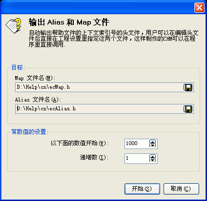

当新建或打开一个工程后，您可以通过用鼠标点击任意的目录项，然后在目录编辑区的右键弹出菜单里的"输出"下选取"输出Alias和Map文件..."将看到这个对话框。关于这个对话框的使用请看下面的具体描述.

在这里，程序可以自动把所有目录项输出为支持上下文帮助的定义文件。您也可以对这些定义进行手工编辑。如果您不需要制作供程序调用的支持上下文帮助的CHM帮助文件，则您可以忽略本功能。
目标 | Map文件名:目标 | Alias文件名:
请选择Alias文件的文件名及保存目录。
常数值的设置 | 递增数:
常数定义的递增数。
| 版权所有 © 2000-2007 国华软件 保留全部权利. |